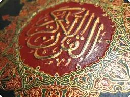
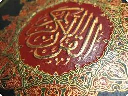

Islam
Muhammed was born in Mecca and grew up there. Muslims are required to visit the city of Mecca in their lifetime. The Quran is made up of Muhammed's teachings, which he spoke to his close friends and followers. His teachings were later written down to become the sacred text.
- There are five pillars of Islam:-
- Shahadah means to profess faith
- Shalah means to pray five times a day.
- Zakat requires giving up a certain amount of money to the community
- Sawm means fasting during the Ramadan month.
- Hajj is the pilgrimage to Mecca.
 

- Clothes in Islam:-
- For Women:
- Hijab: A headscarf worn over the head.
- Abaya: A long, loose-fitting outer garment.
- Niqab/Burqa: A veil that covers the face.
- For Men:
- Thobe: A long, loose-fitting shirt.
- Turban: A head covering.
- Ghutra: A traditional headcloth worn with an egal (a rope to hold it in place).